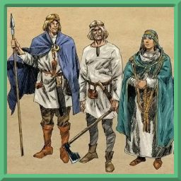

Регион Померания находится на севере Каладана, образуя южное побережье Ледяного моря. Климат здесь умеренный: холодные зимы сменяются жарким, но не очень долгим летом. Померанцы живут в прибрежных городах либо маленьких деревнях, где каждый знает каждого. Они с подозрением относятся к чужакам, зато очень радушно — к соплеменникам. Их праздники неразрывно связаны с природой и её изменениями.
Померанцы верят в Пятерых — эту веру принесли с собой переселенцы. Их церкви не такие большие, а обряды не так помпезны.
Померанцы — высокие, традиционно крепко сложенные жители. У них обычно чёрные либо коричневые волосы, а также карие или зеленоватые глаза. Одеты они преимущественно в простые и практичные льняные рубахи с множеством мелких узоров. Также часто используются плащи и накидки с небольшими украшениями в виде фибул.
Традиционным занятием померанцев являются охота и рыбалка. В их деревнях есть одомашненный скот.
Померанцы разделяют несколько общих особенностей.
| Особенность | Описание |
|---|---|
| Увеличение характеристик | Значение вашей Мудрости увеличится на 1, а значение любой характеристики на ваш выбор увеличится на 1. |
| На границе леса | Вы получаете владение навыком Природа. |
| Возраст | Померанцы становятся взрослыми в районе 19 лет и доживают до 60 лет. |
| Размер | В среднем померанцы вырастают от 150 до 175 см. Ваш размер — Средний. |
| Скорость | Ваша базовая скорость — 30 футов. |
| Ближе к лесу | Проверки характеристик, совершаемые для того, чтобы вас выследить в лесу, совершаются с помехой. Вы можете предпринять попытку спрятаться, даже если вы слабо заслонены листвой. |
| Черта | Вы получаете одну черту на ваш выбор. |
{kind=link}